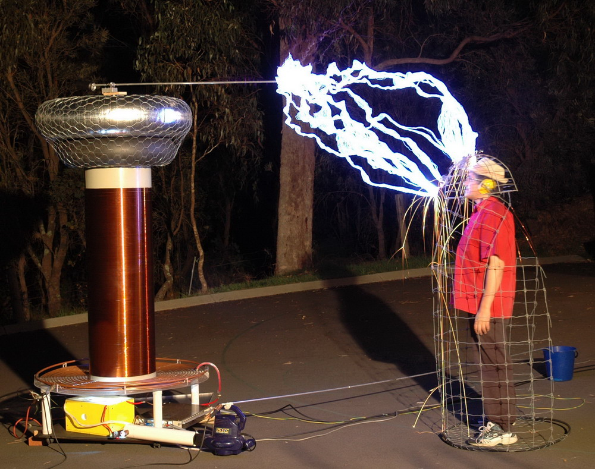

Der Faradaysche Käfig (auch Faraday-Käfig) ist eine allseitig geschlossene Hülle aus einem elektrischen Leiter
(z. B. Drahtgeflecht oder Blech), die als elektrische Abschirmung wirkt.
Bei äußeren statischen oder quasistatischen elektrischen Feldern bleibt der innere Bereich zufolge der Influenz feldfrei.
Bei zeitlich veränderlichen Vorgängen wie elektromagnetischen Wellen beruht die Abschirmwirkung auf den sich in der leitfähigen Hülle ausbildenden Wirbelströmen,
die dem äußeren elektromagnetischen Feld entgegen wirken.
Faradayscher Käfig, besetzt mit Probanden im feldfreien Innenraum.
Der Begriff geht auf den englischen Physiker Michael Faraday (1791–1867) zurück.
Die Quantität der Schirmwirkung wird über die Schirmdämpfung (zum Beispiel einer Abschirmung) erfasst.
Ein Faradayscher Käfig führt unter anderem zu folgenden Effekten:
1. Im Inneren eines idealen Faradayschen Käfigs ist kein Funkempfang (Radio, Mobilfunk) möglich.
2.Schlägt ein Blitz in einen Faradayschen Käfig, zum Beispiel ein Auto oder ein Flugzeug, ein, bleiben Personen im Innenraum ungefährdet,
weil die elektrische Feldstärke im Innenraum erheblich geringer ist als im Außenraum.
In der Nähe von Öffnungen in der Metallhülle dringt ein äußeres Feld anteilig in den geschirmten Raum ein.
Das Ausmaß der Durchdringung hängt von der Ausdehnung der Öffnung im Verhältnis zur Wellenlänge des Spektrums des äußeren Feldes ab.
3. Wird eine elektrische Entladung innerhalb eines Faradayschen Käfigs erzeugt, bleiben dagegen außenstehende Beobachter ungefährdet.
